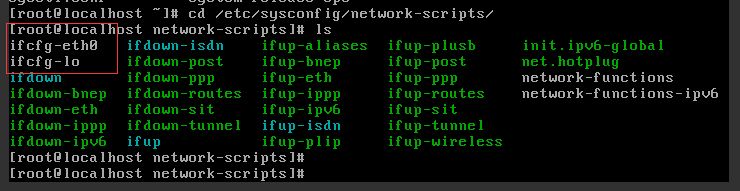
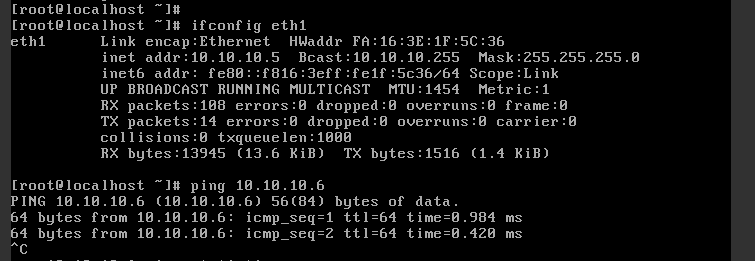

4. Centos虚拟机联网配置¶
Tip
在OpenStack云平台创建centos虚拟机，启动后发现无法上网。Google了一番之后，解决问题，于是记录下来，以作参考。
版本：Centos6.5 版
4.1. 问题排查¶
4.1.1. 查看网络配置¶
Centos虚拟机启动后，无法联网， Centos 的网络配置如下：

Centos ifconfig
然后查看centos的网卡配置和网卡启动脚本配置, 可以看到，启动脚本里，只有ifcfg-eth0脚本； 而Centos虚拟机是从虚拟网卡(virtio-pci)联网的, 因此肯定网络不通。

Centos 网卡配置

{kind=link}
Centos网卡启动脚本配置
4.1.2. 增加虚拟网卡配置¶
定位到原因后，剩下的问题就简单了，我们只需要增加虚拟网卡配置文件(ifcfg-eth1)，然后重启网络服务即可。
DEVICE=eth1
HWADDR=fa:16:3e:5f:ca:91
TYPE=Ethernet
ONBOOT=yes
NM_CONTROLLED=yes
BOOTPROTO=dhcp
Important
特别注意：增加虚拟网卡配置文件，HWADDR的值要和/etc/udev/rules.d/70-persistent-net.rules文件中相应的 硬件地址对应上。
重启网络服务：
service network restart

{kind=link}
增加虚拟网卡配置文件后，虚拟机之间成功互联
4.2. 增加路由¶
经过上面的步骤之后，发现OpenStack之间的虚拟机可以相互ping通，但是centos还是无法上网。 由于OpenStack里Windows虚拟机可以上网，因此初步猜想是由于路由引起的。

windows虚拟机路由配置

Centos虚拟机路由配置
可以看到，windows有一条默认路由(目的地为0.0.0.0， 网关为10.10.10.10.1), 而10.10.10.1位虚拟路由器， 刚好是虚拟机流量出口网关，因此尝试在centos上也加一条默认路由。
route add -net 0.0.0.0 gw 10.10.10.1

增加路由，成功联网
Tip
重启虚拟机之后，假如又无法联网了，这时只需重启网络服务并增加路由即可(不过经过上面的配置之后，一般 重启之后都可以联网)，如下命令：
service network restart
route add -net 0.0.0.0 gw 10.10.10.1